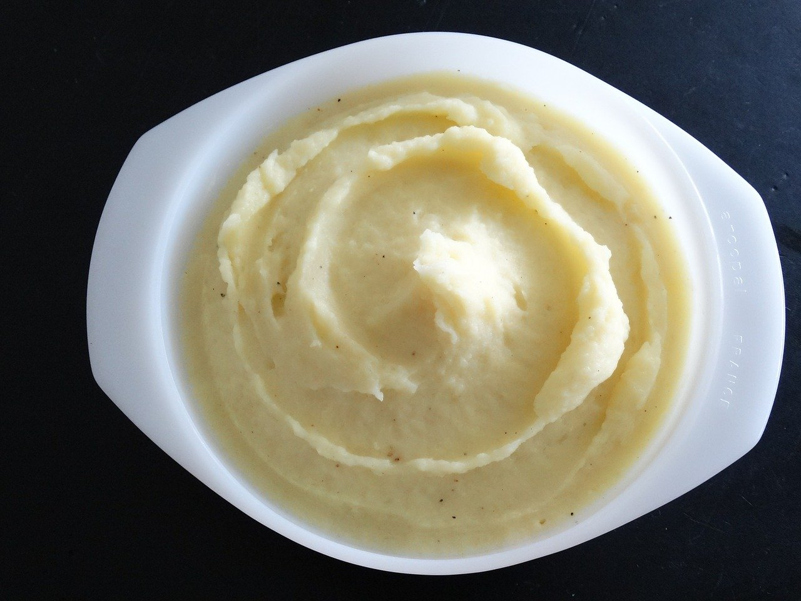

Buttermilk Mashed Potatoes

Mashed Potatoes Fit For a feast!
Extra creamy buttermilk mashed potatoes bursting with flavor. No need to
add gravy! This side dish will have everyone at the table
begging for more!
Ingredients
- 6 medium white potatoes, peeled
- 3/4 cup buttermilk
- 3 tablespoons butter
- 2 tablespoons chicken bouillon powder
- 2 teaspoons chopped fresh dill
- salt and ground black pepper to taste
Cooking Directions
-
Place potatoes into a large pot and cover with salted water; bring to a
boil. Reduce heat to medium-low and simmer until tender, 20 to 30
minutes. Drain and mash in a large bowl.
-
Add buttermilk, butter, bouillon powder, dill, salt, and pepper and mash
until creamy.
Back To The Top
Back To Homepage